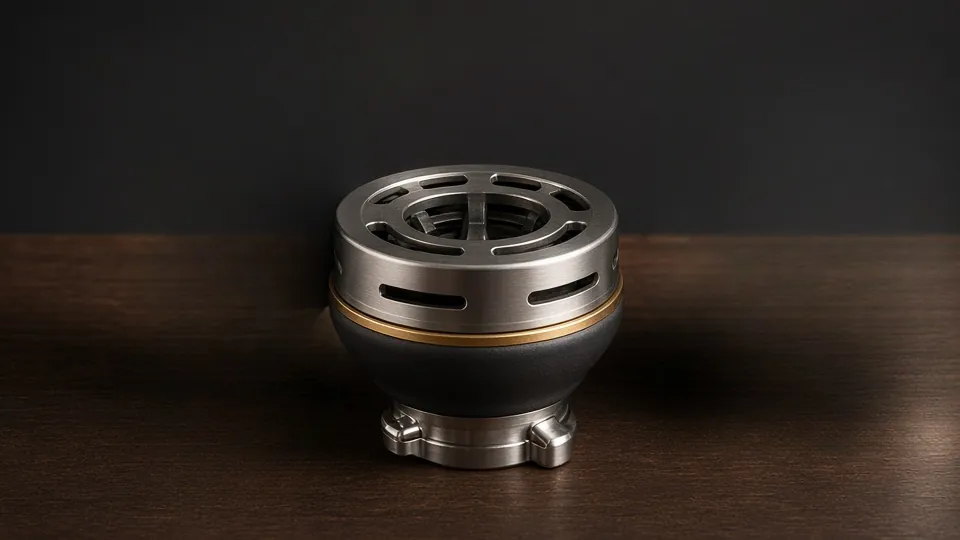
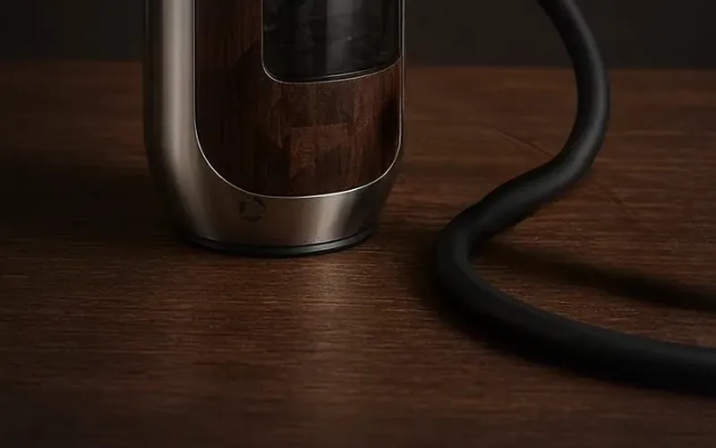

Smart HMD
الرأس الذكي القياسي في كل الطرازات. رأس إضافي أو احتياطي؛ سخان خزفي بتحكم PID.
كل ما ينكسر أو يبلى أو تريد ترقيته يُباع منفصلًا. تستخدم جميع طرازات NARION قفل البايونت 45° نفسه؛ راجع جدول التوافق أدناه عند اختيار القطعة.

تظهر الأسعار حيث ينشرها الموقع بالفعل؛ وما عدا ذلك يُسعَّر عند الطلب.
الرأس الذكي القياسي في كل الطرازات. رأس إضافي أو احتياطي؛ سخان خزفي بتحكم PID.
رأس فانل من السيراميك الأسود المطفأ مصمم لـNARION؛ قاعدته ببايونت 45° تناسب كل الطرازات. لجلسة كلاسيكية بدل Smart HMD.
مدير حرارة من الفولاذ المقاوم للصدأ بحلقة هواء قابلة للضبط ومقبض من خشب الجوز. يناسب رأس NARION الكلاسيكي.
شكل وسعة خاصان بكل طراز؛ عنق مصقول ليناسب طوق البايونت 45°. بديل زجاجي اختياري.
طوق من الفولاذ المقاوم للصدأ يُثبَّت على عنق الزجاج؛ مقطع قفل واحد للقارورة والجسم والصينية ومخرج الخرطوم.
حلقات فلوروإيلاستومر لا تحتفظ بالنكهة؛ يُنصح بالتبديل سنويًا.
خرطوم سيليكون قابل للغسل وبلا رائحة بطرف بايونت.
مباسم سيليكون صحية (5 قطع) وخيارات معدنية.
صينية فولاذية تحت الرأس تُبعد الرماد والأجزاء الساخنة عن الطاولة.
طرف أنبوب الغمر لسحب هادئ.
بطارية ليثيوم احتياطية تُبدَّل دون قطع الجلسة.
قاعدة شحن مغناطيسية لـSmart HMD.
صور القطع تصميمية/منتجية؛ قد تختلف قطع الإنتاج قليلًا.
قارورة زجاجية كلاسيكية لكل طراز، تُقفل على الجسم بطوق معدني ببايونت 45°. الصور مقتطعة من صور الطرازات. لا توجد قارورة منفصلة في KOZA.

رأس ومدير حرارة مصممان لـNARION لجلسة كلاسيكية دون كهرباء. تُقفل قاعدة الرأس في بايونت 45° في كل الطرازات، وتوازن حلقة الهواء القابلة للضبط الحرارة. السعر عند الطلب.

قفل البايونت مشترك بين الطرازات الـ17. طقم الخرطوم والحلقات مشترك بين KOZA · LADİN · MANOLYA؛ مقاسات طرازات برنامج الإنتاج قيد التأكيد.
| الطراز | قارورة زجاجية كلاسيكية | طوق بايونت 45° | طقم الخرطوم والحلقات | الرأس القياسي | رأس NARION الكلاسيكي | مدير حرارة NARION |
|---|---|---|---|---|---|---|
| NARION KOZA | لا قارورة منفصلة (هيكل بلا زجاج) | ✓ معيار مشترك | ✓ طقم مشترك | Smart HMD (قياسي) | ✓ بايونت 45° | ✓ مع الرأس الكلاسيكي |
| NARION LADİN | قارورة زجاجية — 850 مل | ✓ معيار مشترك | ✓ طقم مشترك | Smart HMD (قياسي) | ✓ بايونت 45° | ✓ مع الرأس الكلاسيكي |
| NARION MANOLYA | قارورة زجاجية — 800 مل | ✓ معيار مشترك | ✓ طقم مشترك | Smart HMD (قياسي) | ✓ بايونت 45° | ✓ مع الرأس الكلاسيكي |
| NARION SERVİبرنامج الإنتاج | قارورة زجاجية — 950 مل | ✓ معيار مشترك | قيد التأكيد | Smart HMD (قياسي) | ✓ بايونت 45° | ✓ مع الرأس الكلاسيكي |
| NARION PRİZMAبرنامج الإنتاج | قارورة زجاجية — 700 مل | ✓ معيار مشترك | قيد التأكيد | Smart HMD (قياسي) | ✓ بايونت 45° | ✓ مع الرأس الكلاسيكي |
| NARION OCAKبرنامج الإنتاج | قارورة زجاجية — 750 مل | ✓ معيار مشترك | قيد التأكيد | Smart HMD (قياسي) | ✓ بايونت 45° | ✓ مع الرأس الكلاسيكي |
| NARION FENERبرنامج الإنتاج | قارورة زجاجية — 750 مل | ✓ معيار مشترك | قيد التأكيد | Smart HMD (قياسي) | ✓ بايونت 45° | ✓ مع الرأس الكلاسيكي |
| NARION NOMADبرنامج الإنتاج | قارورة زجاجية — 450 مل | ✓ معيار مشترك | قيد التأكيد | Smart HMD (قياسي) | ✓ بايونت 45° | ✓ مع الرأس الكلاسيكي |
| NARION AURAبرنامج الإنتاج | قارورة زجاجية — 850 مل | ✓ معيار مشترك | قيد التأكيد | Smart HMD (قياسي) | ✓ بايونت 45° | ✓ مع الرأس الكلاسيكي |
| NARION MONOLİTبرنامج الإنتاج | قارورة زجاجية — 800 مل | ✓ معيار مشترك | قيد التأكيد | Smart HMD (قياسي) | ✓ بايونت 45° | ✓ مع الرأس الكلاسيكي |
| NARION İNCİبرنامج الإنتاج | قارورة زجاجية — 700 مل | ✓ معيار مشترك | قيد التأكيد | Smart HMD (قياسي) | ✓ بايونت 45° | ✓ مع الرأس الكلاسيكي |
| NARION YALINبرنامج الإنتاج | قارورة زجاجية — 750 مل | ✓ معيار مشترك | قيد التأكيد | Smart HMD (قياسي) | ✓ بايونت 45° | ✓ مع الرأس الكلاسيكي |
| NARION ZEYTİNبرنامج الإنتاج | قارورة زجاجية — 650 مل | ✓ معيار مشترك | قيد التأكيد | Smart HMD (قياسي) | ✓ بايونت 45° | ✓ مع الرأس الكلاسيكي |
| NARION ARDIÇبرنامج الإنتاج | قارورة زجاجية — 700 مل | ✓ معيار مشترك | قيد التأكيد | Smart HMD (قياسي) | ✓ بايونت 45° | ✓ مع الرأس الكلاسيكي |
| NARION KEMERبرنامج الإنتاج | قارورة زجاجية — 750 مل | ✓ معيار مشترك | قيد التأكيد | Smart HMD (قياسي) | ✓ بايونت 45° | ✓ مع الرأس الكلاسيكي |
| NARION YÖRÜNGEبرنامج الإنتاج | قارورة زجاجية — 700 مل | ✓ معيار مشترك | قيد التأكيد | Smart HMD (قياسي) | ✓ بايونت 45° | ✓ مع الرأس الكلاسيكي |
| NARION ÇAKILبرنامج الإنتاج | قارورة زجاجية — 600 مل | ✓ معيار مشترك | قيد التأكيد | Smart HMD (قياسي) | ✓ بايونت 45° | ✓ مع الرأس الكلاسيكي |
ملاحظة: بيع القطع الإلكترونية (Smart HMD، البطارية، قاعدة الشحن) وتسليمها يخضعان للأنظمة المحلية ويُؤكَّدان عند عرض السعر.
لأن KOZA وLADİN وMANOLYA تستخدم معيار البايونيت نفسه، فإن الحشوات والخرطوم قطعة واحدة في الثلاثة؛ ويناسب رأس NARION الكلاسيكي ومدير الحرارة كل الطرازات عبر قاعدة البايونت 45°. وحتى لو شغّل المقهى الطرازات الثلاثة، يبقى مخزونه طقمًا واحدًا، وينتفي احتمال طلب القطعة الخطأ.
الأرقام أدناه أسعار تجزئة مستهدفة. وتُشارَك قائمة أسعار الوكلاء ودرجات الكميات عند الطلب، بعد توقيع اتفاقية سرية.
| القطعة | سعر التجزئة المستهدف | التوافق |
|---|---|---|
| قارورة زجاجية كلاسيكية (طوق بايونت 45°) | عند الطلب | خاص بالطراز (عدا KOZA) |
| رأس NARION الكلاسيكي | عند الطلب | جميع الطرازات |
| مدير حرارة NARION | عند الطلب | جميع الطرازات (مع رأس NARION الكلاسيكي) |
| خرطوم بديل — سيليكون | 29 $ | واحد في الطرازات الثلاثة |
| طقم حلقات FKM | عند الطلب | واحد في الطرازات الثلاثة |
| أطراف سيليكون (5 قطع) | عند الطلب | خاص بالطراز |
| طرف الناشر | عند الطلب | خاص بالطراز |
| في النرجيلة التقليدية | في NARION | السبب |
|---|---|---|
| كسر القارورة الزجاجية | يُستبدل الزجاج فقط | تُركَّب القارورة الزجاجية الكلاسيكية بطوق بايونت 45°؛ إن انكسر الزجاج يُركَّب الطوق المعدني على قارورة جديدة ويُستبدل الزجاج وحده. |
| تشقّق رأس الطين | أُزيل من التصميم | الرأس القياسي في جميع الطرازات هو رأس NARION Smart HMD الذكي؛ لا رأس طيني. ولجلسة كلاسيكية يُباع رأس NARION الكلاسيكي (سيراميك أسود مطفأ، قاعدة بايونت 45°) ومدير حرارة NARION بشكل منفصل. |
| عطل الصمام | أُزيل من التصميم | لا يوجد صمام كروي؛ يُفكّ الغشاء ويُغسل. |
| تلف الأسنان اللولبية | أُزيل من التصميم | لا وصلات لولبية؛ البايونيت يُقفل بحركة واحدة بزاوية 45°. |
| تقادم الحشوات | استبدال مجدول | حلقة FKM بند استهلاكي زهيد؛ ويُنصح بتغييرها سنويًا. |
أدِر 45° فيُقفل. بلا لولب ولا تآكل أسنان.
الطوق والحلقات والمحولات نفسها في كل الطرازات.
إن انكسرت القارورة يُعاد استخدام الطوق المعدني ويُستبدل الزجاج وحده.